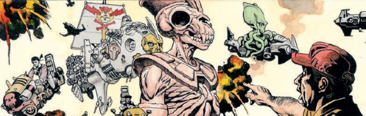

An anthology series that served as a stop-gap during a phase when the Future Shocks banner had fallen out of favor. The first replacement had been Vector 13 but when that ran out of steam, this took over. Eventually Tharg got bored of vacationing in Orion, came back, sent the upstarts downstairs to oil Mek-Quake and sparked up the Shocks generator again.
Art by Chris Weston
| Story Title | Parts | Pages | w indicates a wraparound coverCovers | Year(s) | Issues | Writer | Artist | Colourist | Letterer |
|---|---|---|---|---|---|---|---|---|---|
| Grunts | 1 | 5 | 0 | 1998 | Reprints: M296 (supplement)1096 | Dan Abnett | Mark Harrison | <-- | Annie Parkhouse |
| Loophole | 1 | 5 | 0 | 1998 | 1097 | Kek-W | Cyril Julien | Alan Craddock | Annie Parkhouse |
| Water of Life | 1 | 5 | 0 | 1998 | 1098 | as James Stevens. David Bishop | David Bircham | <-- | Steve Potter |
Linked to Rose O'RionFalse Profits | 1 | 5 | 0 | 1998 | Reprints: M354 (supplement)1099 | Kek-W | Dylan Teague | Alan Craddock | Annie Parkhouse |
| Welcome to the Machine | 1 | 5 | Mark Harrison 1 | 1998 | Reprints: M296 (supplement)1119 | Kek-W | Colin Wilson | Alan Craddock | Annie Parkhouse |
| Space Weed | 1 | 5 | 0 | 1998 | Reprints: M296 (supplement)1120 | Mark Harrison | Mark Harrison | <-- | Annie Parkhouse |
| Best Possible Taste | 1 | 5 | 0 | 1998 | 1121 | Dan Abnett | Steve Sampson | <-- | Annie Parkhouse |
Linked to Rose O'RionHot Rocks | 1 | 5 | 0 | 1998 | Reprints: M354 (supplement)1122 | Kek-W | Andy Clarke | Alan Craddock | Annie Parkhouse |
| The Irydian Factor | 1 | 5 | 0 | 1998 | Reprints: M296 (supplement)1125 | Robbie Morrison | Colin Wilson | Janet Gale | Steve Potter |
| Blood of Heroes | 1 | 5 | 0 | 1999 | Reprints: M296 (supplement)1126 | Mark Harrison | Mark Harrison | <-- | Steve Potter |
| Chimera Canyon | 1 | 5 | 0 | 1999 | 1127 | Dan Abnett | Adam Hoy | Chris Blythe | Steve Potter |
| The Shutdown Man | 1 | 5 | 0 | 1999 | 1128 | Dave Stone | Ben Willsher | Alan Craddock | Steve Potter |
| Coy's Big Score | 1 | 5 | 0 | 1999 | Reprints: M296 (supplement)1129 | Dan Abnett | Neil Google | Chris Blythe | Ellie de Ville |
| The Big Hit | 1 | 5 | 0 | 1999 | 1130 | Robbie Morrison | Ben Willsher | Chris Blythe | Ellie de Ville |
| Night Shift | 1 | 5 | 0 | 1999 | 1131 | Gordon Rennie | Dylan Teague | <-- | Steve Potter |
| Eggs Is Eggs | 1 | 5 | 0 | 1999 | Reprints: M296 (supplement)1145 | Mike Carey | Cliff Robinson | Chris Blythe | Annie Parkhouse |
| Buzz Tyccho's Last Stand | 1 | 5 | 0 | 1999 | 1146 | Gordon Rennie | Charlie Adlard | <-- | Ellie de Ville |
| Doin' Time | 1 | 5 | 0 | 1999 | 1147 | Mike Carey | Ben McCloud | Sam Carlisle | Ellie de Ville |
| Surgical Strike | 1 | 5 | 0 | 1999 | 1148 | Gordon Rennie | Trevor Hairsine | <-- | Ellie de Ville |
| Female of the Species | 1 | 5 | 0 | 1999 | 1149 | Robbie Morrison | Siku | Ali Naqui | Ellie de Ville |
| War of Words | 1 | 5 | 0 | 1999 | Reprints: M296 (supplement)1159 | Robbie Morrison | Cliff Robinson | Chris Blythe | Steve Potter |
| Psico | 1 | 5 | 0 | 1999 | Reprints: M296 (supplement)1160 | Robbie Morrison | Nigel Raynor | Sam Carlisle | Steve Potter |
| Hunger For Glory | 1 | 5 | 0 | 1999 | 1162 | Allan Bednar | Allan Bednar | Dylan Teague | Steve Potter |
| Feast of Skin | 1 | 5 | 0 | 1999 | Reprints: M278 (supplement)1163 | John Smith | Chris Weston | <-- | Steve Potter |
| Skin Bazaar | 1 | 5 | 0 | 1999 | Reprints: M296 (supplement)1169 | Colin Clayton Chris Dowsvarious | Dean Ormston | <-- | Fiona Stephenson |
| Endangered Species | 1 | 5 | 0 | 1999 | 1171 | Kek-W | Wayne Reynolds | <-- | Ellie de Ville |
| Chronvicts | 1 | 5 | 0 | 1999 | Reprints: M296 (supplement)1172 | Gordon Rennie | Siku | <-- | Ellie de Ville |
| Space Scum | 1 | 5 | 0 | 2000 | Reprints: M296 (supplement)1177 | Colin Clayton Chris Dowsvarious | Cliff Robinson | Chris Blythe | Ellie de Ville |
| >> Floating Covers << | |||||||||
| Pulp Sci-Fi | ~ | ~ | 1 | 1998 | 1096 | n/a | Henry Flint | <-- | n/a |
| year | episodes | pages |
| 1989 | 0 | 0 |
| 1990 | 0 | 0 |
| 1991 | 0 | 0 |
| 1992 | 0 | 0 |
| 1993 | 0 | 0 |
| 1994 | 0 | 0 |
| 1995 | 0 | 0 |
| 1996 | 0 | 0 |
| 1997 | 0 | 0 |
| 1998 | 9 | 45 |
| 1999 | 18 | 90 |
| 2000 | 1 | 5 |
| 2001 | 0 | 0 |
| 2002 | 0 | 0 |
| 2003 | 0 | 0 |
| 2004 | 0 | 0 |
| 2005 | 0 | 0 |
| 2006 | 0 | 0 |
| 2007 | 0 | 0 |
| 2008 | 0 | 0 |
| 2009 | 0 | 0 |
Comic strip data (excludes other content):